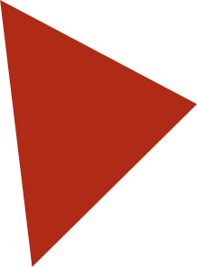
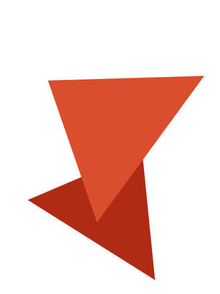

World’s Toughest Fireworks is dé professionele partner in de vuurwerkbranche. Met onze vier succesvolle formules, bieden we onze samenwerkingspartners topkwaliteit, topservice én volledige ontzorging.
ONZE FORMULESWe geloven sterk in een nauwe samenwerking met onze dealers. We streven naar een totaalconcept waarbij onze dealers kunnen rekenen op optimale ondersteuning. Samen met onze dealers hebben we de afgelopen jaren geïnvesteerd in onze succesvolle verkoopformule Vuurwerktoppers. We hebben hiermee het meest effectieve, gebruiksvriendelijke, uitgebreide en innovatieve verkoopsysteem ontwikkeld van Nederland én Europa.
Met dit systeem beschik je als dealer over de mogelijkheid om je assortiment in te voeren en bij te houden, inkooporders in te voeren, bestellingen te beheren en de financiële situatie te analyseren. Bestelling geplaatst? We leveren direct uit eigen voorraad en staan binnen 1 uur + reistijd bij de dealer op de stoep. We werken enkel met veilige, duurzame en innovatieve producten van hoge kwaliteit. De verkoopresultaten voor jou als dealer staan hierbij centraal. Indien gewenst ontzorgen we je volledig: zo bepaal je bij ons zelf wanneer je je vuurwerk geleverd wilt krijgen en zorgen we voor een goede online en offline marketing, onder andere via social media, influencers, forums en meer. Wij zorgen ervoor dat je zichtbaar bent op de grootste online platforms van Nederland én Europa! Bovendien krijg je via dit systeem toegang tot de beste webshop van Europa en ondersteunen wij je bij de bouw van een (voor de opslag van vuurwerk gecertificeerde) bunker, vergunningen, installaties en meer. Wij denken graag met je mee over de manier waarop we samen het beste kunnen halen uit onze samenwerking!
Meer weten over alle mogelijkheden?
Neem een kijkje op de Vuurwerktoppers webshop!
Slim ondernemen begint met slim inspelen op ontwikkelingen in de markt. Bij World’s Toughest Fireworks bieden we daarom de nieuwste webshops, online platforms en door onszelf ontwikkelde beheersystemen. Zo weten we uit ervaring dat met name het voorraadbeheersysteem veel tijd en aandacht vergt van je medewerkers. World’s Toughest Fireworks heeft een innovatief en overzichtelijk systeem ontwikkeld dat voorziet in het volledige bestelproces, van het moment van bestellen tot levering bij de consument. Talloze functies die onderdeel zijn van de dagelijkse werkzaamheden komen samen in dit systeem. Het beheer van je voorraden, het inzien van alle statistieken, de monitoring van de omzet, marge en bruto-winst, het beheren van je dealernetwerk én de mogelijkheid om automatisch te factureren.
Als dealer beschik je met ons systeem over de mogelijkheid om je assortiment in te voeren en bij te houden, inkooporders in te voeren, bestellingen te beheren en de financiële situatie te analyseren. In de beschermde dealeromgeving kun je alle informatie terugvinden over het complete assortiment. Op de persoonlijke pagina is ruimte voor het invoeren van eigen teksten, het selecteren van afhaalvakken en het bijhouden en inzien van omzetten, bestellingen en voorraden. Wij zorgen ervoor dat het systeem altijd beschikbaar is én up to date. Het systeem wordt continu doorontwikkeld en verbeterd, ook voor de consument. We volgen de bewegingen van de bezoekers op de webshop op de voet, om hen zo optimaal mogelijk te kunnen bedienen. Bovendien staan we 24/7 klaar om eventuele vragen te beantwoorden. Door gebruik te maken van ons unieke systeem bespaar je aanzienlijk in kosten, omdat andere systemen overbodig worden. Het volledig geautomatiseerde systeem zorgt ervoor dat jij je kunt focussen op de écht belangrijke zaken. Het resultaat? Meer verkopen en een hoger rendement.